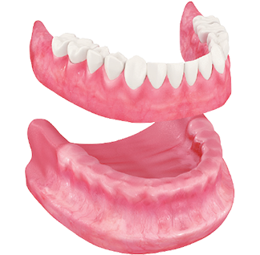
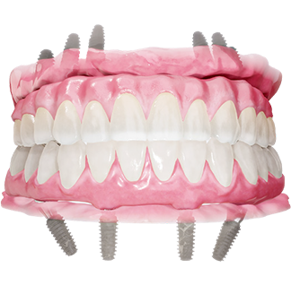
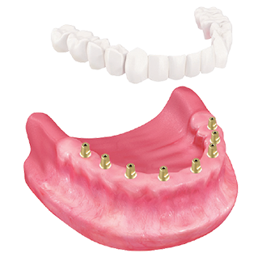

사과나무 임플란트의 특별함
체계적인 디지털 진료 시스템을 바탕으로
풍부한 임상경험을 가진 의료진의 노하우와 안전하고 오래 사용할 수는
성공적인 임플란트를 경험하고 싶다면 대구사과나무치과입니다!
daegu apple tree’s implants
CT & 가이드를 이용한
디지털 임플란트
대구사과나무치과는 3차원 CT 촬영 & 디지털 시뮬레이션을 통해 임플란트의 식립 위치와
깊이 각도까지 모의시술을 통해 안전하게 임플란트를 할 수 있습니다.
또한 임플란트 식립에
필요한 유도 가이드를 제작하여 정확하고 빠르게 시술을 시행합니다.

digital medical system
풀아치 임플란트
믿을 수 있는 임플란트
대구사과나무치과는 무치악 환자들을 위해 비교적 경제적인 비용으로 전체 임플란트 효과를 얻을 수 있는 고난도 풀아치 임플란트를 시행합니다.
또한 상악동거상술 같은 고난도의 뼈이식술도
부작용
없이 안전하게 시술할 수 있습니다.

daegu apple tree’s implants
정확하고 안전하게 진단할 수 있는
정밀 디지털 의료장비 도입
대구사과나무치과는 3차원 디지털 CT, 3D 구강스캐너, 덴탈 3D 프린터, 물방울 레이저, 골밀도 측정기 등 고성능의 의료장비를 도입하여 입체적인 치료 계획을 수립하고 예상밖에 일어날 수 있는 다양한 변수까지 미리 대비하여 안전하게 임플란트를 시행합니다.


digital medical system
오직 검증된,
정품 임플란트 사용
대구사과나무치과는 임플란트의 품질과 안정성이 검증되어 믿을 수 있는 정품 재료만을 사용하여 시술을 진행합니다. 시술 전 상담에서 임플란트의 특징과 보증기간을 자세하게 설명해드리고, 직접 선택하실 수 있습니다.

daegu apple tree’s implants
생활성(UV) 임플란트를 통한
우수한 골융합과 높은 성공룔
대구사과나무치과는 3차원 CT 촬영 & 디지털 시뮬레이션을 통해 임플란트의 식립 위치와 깊이 각도까지 모의시술을 통해 안전하게 임플란트를 할 수 있습니다. 또한 임플란트 식립에 필요한 유도 가이드를 제작하여 정확하고 빠르게 시술을 시행합니다.

digital medical system
오래오래 사용할 수 있도록
철저한 1:1 사후관리
대구사과나무치과는 임플란트 전담 진료팀의 1:1 맞춤형 서비스를 통해 수술전 세심한 상담부터 사후 관리까지 지속적인 유지관리를 위한 프로그램을 운영합니다. 또한 믿을 수 있는 임플란트 품질보증제를 시행함으로써 책임있는 사후관리까지 친절하고 성실하게 고품격의 진료 서비스를 제공해 드립니다.
implant process
무치약 보철치료의 종류
-
전체 틀니
착탈식 보철로 장기간 사용하면
잇몸뼈 흡수로 인해 틀니가 헐겁거나
빠지기 쉽고 관리가 어려움 -
 임플란트 틀니
임플란트 틀니2~4개의 임플란트를 심은 후,
틀니를 고정하는 방식으로
틀니보다 유지력과 저작력이 좋음 -
풀아치 임플란트
4~6개의 임플란트를 심은 후,
하나의 보철물로 연결해 주는 방식으로
보철물을 안정적으로 사용할 수 있고
잇몸 부위를 재현할 수 있어 심미적이며
치료비용에 대한 부담을 덜 수 있음 -
전악 임플란트
다수의 임플란트를 식립하고
개별 보철물을 연결해 주는 방식으로
임플란트의 식립 갯수가 많아
잇몸뼈가 충분해야 하고 비용부담이 큼
daegu apple tree’s special
대구사과나무치과의 특별함
- 01 4인 원장 협진 ONE-SITE 진료
- 02 3차원 디지털 진료 시스템
- 03 세계보건기구 기준의 철저한 소독관리